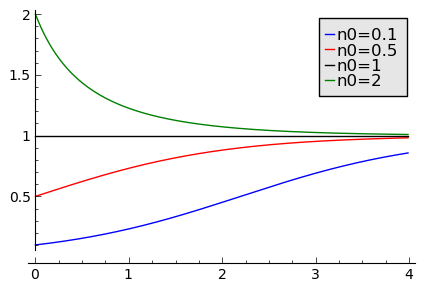

1 Algebra liniowa¶
1.1 Liczby zespolone (interpretacja geometryczna).¶
Interaktywne materiały:
1.2 Wprowadzenie do układów równań liniowych¶

Interpretacja geometryczna układu trzech równań liniowych.
1.3 Algebra macierzy¶
1.4 Operacje na macierzach¶
1.5 Wyznaczniki¶
1.6 Teoria i praktyka układów równań liniowych¶
1.7 Przekształcenia liniowe¶

Geometryczna interpretacja przekształcenia liniowego.
1.8 Przestrzenie unitarne¶
1.9 Wartości i wektory własne¶
1.10 Rozkłady macierzy LU,RU, SVD.¶
1.11 Zastosowania algebry liniowej¶
2 Analiza matematyczna¶
2.1 Funkcje jednej zmiennej¶
2.2 Elementy geometrii różniczkowej¶
2.3 Transforma Fouriera¶
Transformata Fouriera.
2.4 Pierwiastki wielomianów i zera funkcji.¶
2.5 Pochodna funkcji jednej zmiennej; algorytmy obliczające pochodną numerycznie.¶
2.6 Definicja całki oznaczonej, metody numeryczne obliczania całki oznaczonej,w tym metoda prostokątów oraz metoda trapezów.¶
2.7 Funkcje wielu zmiennych: całki wielokrotne, krzywoliniowe, rachunek różniczkowy f. wielu zmiennych.¶
2.8 Analiza równań różniczkowych zwyczajnych¶
- Rozwiązywanie równań różnicznowych zwyczajnych, metody algebraiczne i numeryczne
- Stany stacjonarne oraz ich stabilność. Klasyfikacja punktów osobliwych.
- Diagramy bifurkacyjne dla równań różniczkowych i algorytmy ich konstrukcji
- Praktyczy przewodnik po metodach analizy równań różniczkowych zwyczajnych w Sage.
3 Biofizyka tkanek. Molekularne procesy zachodzące w tkankach¶
3.1 Transmisje impulsów nerwowych: Model Hodgkina-Huxleya.¶
3.2 Motory molekularne – wstęp do analizy ich działania w oparciu o strukturę molekuł.¶
Ruch we fluktuującym potencjale okresowym o złamanej symetrii jest archetypem w modelowaniu motorów molekularnych.
Opis motorów molekularnych. Motory biologiczne w komórkach. Skale wielkości fizycznych w komórce bilogicznej. Mechaniczne modele motorów molekularnych.
3.3 Modelowanie wzrostu guza nowotworowego¶
Jedna z najprostszych metod modelowania wzrostu komórek nowotworowych uwzględniajaca dwa elementy:
- proces wzrostu komórek nowotworowych - analogicznie do modelu Verhulsta;
- proces śmierci komórek nowotworowych przez czynniki zewnętrzne np. system immunologiczny.
- Wzrost guza nowotworowego
3.4 Struktury aminokwasów, białek, DNA, RNA.¶
4 Elastomechanika¶
4.1 Ruch drgający w ośrodkach sprężystych¶
4.2 Sztywność i wytrzymałość ośrodków elastycznych¶
5 Elektrodynamika klasyczna¶
5.1 Transformacja Lorenza.¶
Transformacje Lorentza przedstawione zostały w wyjątkowo prosty sposób, bazujący na szkolnych przekształceniach geometrycznych. Wykorzystując interaktywne możliwości sage’a, szybko znajdziemy długość i czas w układzie poruszającym się i bez problemu stwierdzimy niezmienniczość interwału zdarzeń w przestrzeni Minkowskiego.
Na przykładzie dwóch rakiet poruszających się w przeciwne strony, rozważamy słynny paradoks stodoły i drabiny, będący pozorną konsekwencją szczególnej teorii względności. Czy w jednym układzie odniesienia pocisk trafia w rakietę, a w drugim już nie? Do poprawnej konkluzji dochodzimy rozważając szczegółowo linie świata poszczególnych zdarzeń i ich odległości czasoprzestrzenne.
5.2 Fale elektromagnetyczne, superpozycja.¶
5.3 Szczególna Teoria Względności: zastosowanie techniki ray tracing.¶

5.5 Równanie Poissona¶

Materiał ten zawiera opracowanie numerycznego podejścia do rozwiązywania równania Poissona metodą różnic skończonych. Krok po kroku zaprezentowano sposób konstrukcji od jedno-, dwu- i trójwymiarowego dyskretnego operatora Laplace’a oraz jego wydajną reprezentację na macierzach rzadkich wykorzystując do tego bibliotekę scipy.sparse.
5.6 Dipole i multipole¶
6 Elektryczność i magnetyzm¶
6.1 Natężenie pola elektrycznego.¶
6.2 Siła Lorenza.¶
6.3 Prawo Ohma i Kirchoffa - symulacje obwodów elektrycznych.¶
6.4 Obwody prądu zmiennego¶
Analiza własności obwodów prądu zmiennego z zastosowaniem aparatu algebry komputerowej i metod numerycznych do rozwiązywania równań różniczkowych
Metoda potencjałów węzłowych (ang. node method), czyli jak w prosty sposób analizować układy elektryczne, śledząc napięcie i natężenie prądu w węzłach obwodów. Wykorzystując tę metodę zapiszemy równania różniczkowe dla obwodów RC, RL oraz RLC i wykonamy symulację przebiegu natężenia oraz napięcia prądu w tych obwodach. Na koniec przedyskutujemy również zjawisko rezonansu w układzie RLC.
6.5 Pomiary i symulacje komputerowe wiekości elektrycznych¶
Wyznaczanie oporu elektrycznego za pomocą analogowych mierników prądu Układy do poprawnego mierzenia napięcia i natężenia prądu za pomocą mierników. Cechowanie watomierza i licznika energii elektrycznej Praca i moc prądu elektrycznego, watomierz i licznik energii elektrycznej
6.6 Doświadczalne badanie własności obwodów prądu zmiennego¶
Wyznaczanie pojemności kondensatora z krzywej rozładowania Rozwiązanie równania różniczkowego opisującego charakterystykę rozładowania kondensatora przez opór i wykorzystanie rozwiązania do doświadczalnego wyznaczenia pojemności kondensatora
Wyznaczanie współczynnika samoindukcji i pojemności za pomocą obwodów prądu zmiennego Prądy zmienne sinusoidalne, przesunięcie fazowe, zawada, opór omowy, opór indukcyjny i pojemnościowy, współczynnik samoindukcji
Pomiar napięcia i prądu w obwodzie RC Obwód RC, charakterystyka ładowania i rozładowania kodensatora
Badanie obwodów rezonansowych RLC Szeregowe i równoległe obwody RLC, rezonans w obwodach RLC
6.7 Eksperymentalne badanie siły Lorenza¶
Wyznaczanie wartości stosunku e/m. Ruch elektronu w polu elektrycznym i magnetycznym, siła Lorentza. Siła działająca na przewodnik z prądem w polu elektrycznym Siła Lorentza, waga prądowa.
6.8 Siła elektromotoryczna¶
Wyznaczanie siły elektromotorycznej i oporu wewnętrznego ogniwa Drugie prawo Kirchhoffa, siła elektromotoryczna, opór wewnętrzny, charakterystyka prądowo-napięciowa.
Pomiar SEM fotoogniw za pomocą kompensatora prądu stałego Zjawisko fotowoltaiczne, siła elektromotoryczna ogniwa fotowoltaicznego, sprawność konwersji energii słonecznej na elektryczną.
Indukcja elektromagnetyczna Zjawisko indukcji elektromagnetycznej, prawo Faradaya, siła elektromotoryczna, samoindukcja.
6.9 Pojemność kondensatora¶
Wyznaczanie pojemności kondensatora oraz stałej dielektrycznej metodą mostkową Obwody prądu zmiennego, pojemność kondensatora, stała dielektryczna.
Drgania relaksacyjne Obwody RLC, drgania relaksacyjne w obwodach RLC.
6.10 Badanie_wektorowego_dodawania_napiecia¶
Badanie wektorowego dodawania napięć zmiennych w obwodzie RLC Obwody RLC, wektorowe dodawanie napięć
6.11 Pole elektryczne¶
Analiza i wizualizacja pola elektrycznego pochodzącego od ładunków punktowych. Nacisk został położony na wykorzystanie algebry komputerowej do prostej automatyzacji algorytmicznej otrzymywania formuł i wizualizacji. W przypadku ciągłego rozkładu ładunku została zastosowana algebra komputerowa do otrzymania klasycznych wzorów.
6.12 Potencjal elektryczny¶
Analiza i wizualizacja powierzchni ekwipotencjalnych pochodzących od ładunków punktowych . Nacisk został położony na wykorzystanie algebry komputerowej do wyprowadzania wzorów i wizualizacji. Klasyczne formuły na potencjał pochodzący od pewnych symetrycznych ciągłych rozkładów ładunków zostały wyprowadzone stosując CAS.
6.13 Energia układów ładunków¶

Obliczanie energii skończonych i nieskończonych układów ładunków z zastosowaniem zarówno metod algebry komputerowej jak i podejsciem algorytmicznym. Wykorzystano możliwości Sage do alternatywnego rozwiązywania szeregu klasycznych zadań.
6.14 Eksperymentalne badanie pola elektrycznego¶
Badanie rozkładu pola elektrycznego Natężenie pola elektrycznego, potencjał pola elektrycznego, powierzchnie ekwipotencjalne
6.15 Pole Magnetyczne¶
- Pole magnetyczne pochodzące od poruszających się ładunków, pętla przewodnika, solnenoid.
- Indukcja elektromagnetyczna, dokłane obliczanie strumienia pochodzącego od układu dipoli magnetycznych.
6.16 Ładunek i materia: oddziaływania ładunek-sieć.¶

Układ ładunek - sieć
Zastosowanie metod komputerowych do analizy i wizualizacji układów ładunek-sieć krystaliczna. Pomimo swojej prostoty, własności takiego układu są trudne do przedstawienia analitycznego a zastosowanie komputera powoduje przeniesienie środka ciężkości analizy na własności fizyczne.
6.17 Ładunek i materia: oddziaływania dipol-sieć dipoli.¶

Układ ładunek - dipol
Zastosowanie metod komputerowych do analizy i wizualizacji dipola oddziaływującego z siecią ładunków bądź dipoli. Sage okazuje się jest idealnym narzędziem do pokazania, własności takiego układu w sposób ścisły, ale bez żmudnych rachunków.
7 Komunikacja z przyrządami pomiarowymi¶
7.1 Standardy interfejsów szeregowych RS-232, 422, 485, USB¶
Przykłady współczesnych interfejsów szeregowych. Zalety i wady transmisji szeregowej. Połączenia syncho- i asynchroniczne. Połączenia bezkolizyjne i kolizyjne wraz z przykładową kontrolą przepływu. Sygnały różnicowe jako metoda usuwania szumów. Struktura znaku i parametry transmisji w interfejsie RS-232. Znaczenie kodów ASCII w transmisji szeregowej. Transmisja przy użyciu ramek. Proste metody korekcji błędów.
7.2 Tworzenie oprogramowania do komunikacji szeregowej w języku C.¶
Realizacja prostego urządzenia pomiarowego w oparciu o powszechnie dostępne i tanie mikrokontrolery. Przykład oparty będzie na odczycie temperatury z termometru wbudowanego w miktrokontroler TI MSP430. Przygotowanie kodu obejmuje określenie optymalnych parametrów transmisji oraz ustawień miktrokontrolera. W szczególności ćwiczenie obejmie obliczanie dzielników zegara potrzebnych do uzyskania danej szybkości transmisji oraz tworzenia przykładowych ramek wraz z sumami kontrolnymi. Kod w języku C prezentował będzie część transmisyjną oprogramowania w 3 różnych wersjach:
- wersji opartej na porcie ogólnego przeznaczenia i liczniku, bez użycia przerwań,
- wersji opartej na porcie ogólnego przeznaczenia, w której czas odmierzany jest przy użyciu przerwania,
- w wersji używającej wbudowanego w układ modułu UART.
7.3 Komunikacja szeregowa w języku Python.¶
Moduł w miarę możliwości może być realizowany poprzez arkusz SAGE pod warunkiem, że student może go uruchomić lokalnie. Program domyślnie napisany będzie w Python 2.6 - 2.7 z podkreśleniem różnić w zapisie ciągów pomiędzy Pythonem2 a Py3k. Moduł zawiera:
- Identyfikację portów szeregowych w systemach Linux i Windows,
- opis i konfiguracje modułu serial (pyserial),
- przygotowanie ramki transmisyjnej wraz z sumą kontrolną,
- prostą kontrolę przepływu opartą na metodzie poll
- różnice między typami str, bytes, unicode, bytearray
7.4 Komunikacja z podstawowymi przyrządami pomiarowymi.¶
Przykładowy pomiar oporu elektrycznego nadprzewodnika \(Fe_{1.1}Te_{0.9}S_{0.1}\) wykonany przy użyciu Lakeshore 340 i HP34401A.
W module opisane będą przykładowe programy napisane w różnych językach programowania Python (Linux, Windows), Visual Basic .Net lub C# (Windows) służące do komunikacji z:
- multimetrem HP (Agilent)
- kontrolerem temperatury Lakeshore 340/330
- przystawkami temperaturowymi
8 Matematyczne metody biofizyki¶
8.1 Układy dynamiczne w biofizyce.¶
Wstęp do metody budowania modeli z zakresu dynamiki populacyjnej na prostych przykładach: procesów urodzin, śmierci i migracji.
8.2 Fraktale, algorytmy otrzymywania, własności.¶

Podstawowe definicje (wymiar podobieństwa, wymiar Hausdorffa). Przekształcenia afiniczne. Samo-niezmienniczość. Konstrukcja zbioru Cantora (algorytmy, wizualizacja).
Podstawowe fraktale: dywan i trójkąt Sierpińskiego, krzywa Kocha, krzywa Peano, krzywa C Levy’ego, smok Heighwaya, paproć Barnsleya, zbiór Julii, zbiór Mandelbrota. IFS, wizualizacje, obliczanie wymiaru fraktalnego. Zadania.
8.3 Równanie dyfuzji i reakcji z dyfuzją: numeryczne metody rozwiązywania.¶

Przedstawione są schematy całkowanie równań parabolicznych równań różniczkowych typu dyfuzji i reakcji z dyfuzją (RDS). Nacisk położony jest na zrozumienie podstaw algorytmu oraz na prostą i efektywną implementację w środowisku python.
9 Mechanika klasyczna¶
9.1 Kinematyka punktu materialnego, analiza i wizualizacja rozwiązań równań ruchu.¶
Prosty przykład komputerowej obróbki realnych danych pochodzących z akcelerometra wbudowanego w telefon komórkowy.
9.2 Dynamika punktu materialnego.¶
Rozwiązywanie probemów i zadań z mechaniki z użyciem systemu algebry komputerowej.
9.3 Ruch układów punktów materialnych.¶
Analiza ruchu układów punktów materialnych z użyciem systemu algebry komputerowej.
9.4 Drgania - numeryczne rozwiązania równań ruchu.¶
Zbiór problemów obejmujących liniowe i nieliniowe drgania w układach jednowymiarowych i wielowymiarowych. Klasyczne zagadnienia drgań normalych czy liniowej sieci oscylatorów zostały poszerzone o wnikliwą analizę trudnego zagadnienia - problemu Fermiego-Pasty-Ulama.
9.5 Rozwiązywanie równań ruchu z więzami¶

Zastosowanie systemu algebry komputerowej (CAS) do problemów wykorzystujących zasadę dAleberta. Materiał zawiera metodologię pracy wykorzystującą częściową automatyzacje generacji równań ruchu, tak by z jednej strony uniknąć powtarzania niepotrzebnych definicji a z drugiej strony cały kod był w dydaktyczny sposób podany dla czytelnika.
9.6 Chaos deterministyczny - wprowadzenie.¶
Chaos deterministyczny jest zjawiskiem, które jest badane przede wszystkim metodami komputerowymi, co powoduje, że brak go w klasycznych podręcznikach. Poniższe materiały prezentują analizę komputerową tego zjawiska.
Klasyczne układy chaotyczne - równanie logistyczne i układ Lorenza
Chaos u układzie nieliniowego oscylatora z siłą napędzającą:
9.7 Modelowanie realistycznych układów mechnicznych¶
Tor lotu szybowca z “zablokowanym drążkiem” w zależności od prędkości początkowej.
Modelowanie różnych układów fizycznych wymagające zastosowania metod numerycznych. Klasycznym podejsciem było omijanie tego typu probemów, z powodu ograniczonych możliwości analizy bez zastosowania metod komputerowych. Mając do dypozycji potężne narzędzie w postaci Sage z wszystkimi wbudowanymi metodami numerycznymi możemy analizować realistyczne problemy.
- Realistyczne modelowanie rzuty ukosnego
- Realistyczne modelowanie tarcia nieliniowego (problem froterki)
- Mechanika lotu samolotu - fugoida jako model o trzech stopniach swobody:
- Modelowanie żaglówki
9.8 Własności akustyczne materii¶
Rezonans akustyczny Fala dźwiękowa, powstawanie fal stojących, rezonans akustyczny.
9.9 Eksperymentalne badanie dynamiki bryły sztywnej¶
Wyznaczanie gęstości za pomocą piknometru Gęstość, siła wyporu, prawo Archimedesa. Wyznaczanie momentu bezwładności. Dynamika bryły sztywnej, wahadło torsyjne, moment bezwładności. Dynamika ruchu obrotowego Moment siły, moment pędu, moment bezwładności
9.10 Eksperymentalne badania ruchu obrotowego¶
Ruch w polu centralnym Opis ruchu ciał w polu centralnym, w przypadku sił przyciągających i odpychających.
9.11 Zderzenia sprężyste i niesprężyste¶
Stół powietrzny - zderzenia sprężyste i niesprężyste. Zasada zachowania pędu i zasada zachowania energii, zderzenia sprężyste centralne i niecentralne. Dynamika ruchu postępowego Zasady dynamiki Newtona, stół powietrzny
9.12 Oscylator harmoniczny¶

Zjawisko rezonansu
Klasyczny oscylator harmoniczny jest jednym z najczęściej stosowanych modeli w fizyce. Przedstawiamy sposób otrzymania znanych wzorów wykorzystując w pełni system algebry komputerowej zawarty w Sage. Przy okazji pokazujemy pułapki, w które można wpaść nieumiejętnie wykorzystując narzędzia komputerowe.
9.13 Numeryczna analiza układów mechanicznych¶

Wielokrotne pętle w hiszpańskim “Dragon Khan” w Salou (źródło: Wikipedia)
Modelowanie różnych układów fizycznych wymagające zastosowania metod numerycznych.
9.14 Teoria bryły sztywnej¶
9.15 Doświadczalne badanie drgań¶
Połączenie symulacji z eksperymentem:
- pomiar rezonansu i dudnień układu dwóch wahadeł.
- Symulacja w sage - analiza równań różniczkowych, rozwiązanie dla układu pomiarowego.
10 Mechanika kwantowa¶
10.1 Równanie Schrodingera¶
Funkcje własne cząstki w pudle potencjału..
Numeryczna analiza równania ruchu w mechanice kwantowej na wybranych przykładach: funkcja falowa - pakiety falowe, propagacja pakietu falowego, przejscie przez bariere, tunelowanie.
10.2 Kwantowy oscylator harmoniczny¶
Cząstka kwantowa w jednowymiarowym potencjale typu \(~x^2\) zwany kwantowym oscylatorem harmonicznym. W tym materiale zostały opracowane wizualizacje funkcji własnych oscylatora harmonicznego. Pomimo, że dysponujemy dokładnymi rozwiązaniami algebraicznymi, to prezentujemy porównanie z precyzyjną i wydajna numeryką. Ponadto rozwiązane jest też czasowe równania Schrodingera i została wykonana wizualiacja ewolucji funkcji falowej. Pokazano też ewolucję stanów Glaubera.
10.3 Alternatywne metody rozwiązywania równania Schrodingera¶
Ilustracja rozwiązania równania Schrodingera jako zagadnienia początkowego
10.4 Kwantowe układy otwarte¶
Układ kwantowy oddziałujący z otoczeniem - modele. Otwarte układy dwu-poziomowe. Dyfyzja kwantowa. Dekoherencja: dysypacja i defazing.
11 Metody matematyczne fizyki¶
11.1 Pola skalarne i wektorowe¶

Powierzchnie stałego pola.
Materiały analizujące własności pół skalarnych i wektorowych oraz ich wizualizacje komputerowe:
- Wstęp do metod wizualizacji pól wektorowych na płaszczyźnie i w przestrzeni: wizualizacja pól.
- Własności pola wektorowego o współczynnikach liniowo zależących od współrzędnych: pole liniowe.
- Numeryczne obliczanie całek krzywoliniowych: całki krzywoliniowe.
11.2 Operatory różniczkowe dla pól skalarnych i wektorowych.¶

Strumień przez zamknięty kontur.
Materiały analizujące własności operatorów różniczkowych z zastosowaniem algebry komputerowej i wizualizacji komputerowej:
- Wyprowadzenie wzorów na dywergencję i rotację pola we współrzędnych kartezjąńskich oraz podstawowe własno`Własności tych operatorów operatory różniczkowe
- Operatowy różniczkowe we współrzędnych krzywoliniowych - podejście wykorzystujące współczynniki Lame’go oraz algebrę komputerową:Lame
11.3 Rozwiązywanie równania splotowego¶
Opracowana została procedura rozwiązywania równania splotowego, która ma szczególne znaczenie dla analizy sygnałow pochodzacych z metod spektroskopowych i dyfrakcyjnych.
11.4 Równania różniczkowe cząstkowe: Laplace’a, falowe, Fokkera-Plancka¶
Wstęp do równań różniczkowych cząstkowych spotykanych w fizyce. Metody rozwiązywania równań rózniczkowych cząstkowych: metoda rozdzielenia zmiennych; metoda transformacji Fouriera. Funkcje Greena i propagatory. Do każdego z równań dodany jest podstawowy algorytm numerycznu umożliwiający interaktywne badanie właności rozwiązań.

11.5 Fale w fizyce¶
Zjawiska falowe są wszechobecne czego przykładem są fale elektromagnetyczne, fale dźwiękowe (akustyczne) i fale sprężyste (mechaniczne). Można powiedzieć, że nasze otoczenie wypełnione jest falami. Fale są wykorzystywane gdy słuchamy radia, oglądamy telewizję, dzwonimy telefonami komórkowymi do znajomych, używamy bezprzewodowego internetu, używamy “pilotów” do zamykania bram, włączania i wyłączania urządzeń telewizyjnych.
11.6 Wielomiany ortogonalne¶
Podstawowe własności wielomianów ortogonalnych. Wizualizacje oraz algorytmy liczące wielomiany ortogonalne.
12 Metody statystyczne¶

{kind=link}
{kind=link}
{kind=link}
{kind=link}
{kind=link}
{kind=link}
{kind=link}
{kind=link}
{kind=link}
{kind=link}
{kind=link}
{kind=link}
{kind=link}
{kind=link}
{kind=link}
{kind=link}
{kind=link}
{kind=link}
{kind=link}
{kind=link}
{kind=link}
{kind=link}
{kind=link}
{kind=link}
{kind=link}
{kind=link}
{kind=link}
{kind=link}
{kind=link}
{kind=link}
12.2 Podstawowe parametry rozkładu zmiennej losowej.¶
Opracowanie interaktywnych wizualizacji oraz praktycznych zadań wykorzystujących system komputerowy Sage w celu nabycia doświadczenia we elementarnych własnościach zmiennych losowych.
12.3 Rozkłady prawdopodobieństwa.¶

Histogram danych o rozkładzie normalnym.
Praktyczne zadania dla studentów oraz interaktywne materiały wizualizacyjne mające na celu nabycie przez studenta intuicji w posługiwaniu się pojęciem rozkładu prawdopodobieństwa. Automatyczna generacja danych losowych do zbadania przez studenta.
12.4 Generatory zmiennych losowych.¶

Metoda odrzucania.
- Generatory zmiennych losowych:
- Budowa podstawowego generatora programowego - Liniowego generatora kongruencyjnego, jego własności.
- Rejestr przesuwający z liniowym sprzężeniem zwrotnym.
- Generatory w Sage.
- Generowanie liczb losowych o zadanym rozkładzie:
- Histogram.
- Metoda inwersyjna
- Metoda odrzucania
- Generowanie liczb losowych z rozkładem normalnym.
12.5 Analiza błędów eksperymentalnych w praktyce¶
Ilustrowana przykładami instrukcja przeprowadzenia analizy błędów pomiarowych z wykorzystaniem wbudowanych mechanizmów Sage. Procedura opracowana pod kątem studentów wykonujących ćwiczenia w ramach pracowni fizycznych opracowywujących wyniki pomiarów w Sage.
12.6 Wstęp do analiz statystycznych w środowisku R¶
{kind=link}
Wprowadzenie do środowiska R. Parametryczne i nieparametryczne statystyki opisowe, podstawowe testy statystyczne, modele regresji liniowej.
Opracowanie wykorzystuje system notatnika w Sage z funkcjonalnością interpretera języka R.
13 Mikrokontrolery¶
13.1 Programowanie mikrokontrolera ARM¶
Sposoby programowania układu z mikroprocesorem CortexM4f, mającym szerokie zastosowania w automatyce. Przedstawione zostaną metody kompilacji i wgrywania kodu do układu.
13.2 Systemy czasu rzeczywistego¶
Omówienie podstawowych własności i możliwości systemów czasu rzeczywistego (RTOS): zarządzanie czasem procesora, wątki, przerwania. Charakterystyka systemu ChibiOS i jego przykładowe zastosowania.
13.3 Interfejsy czujników cyfrowych w systemach wbudowanych¶
Interfejsu 1-wire, płytka Arduino Mini Pro z procesorem ATMega 328. Omówiony zostanie sposób podłączenia czujnika temperatury DS18B20 (1-wire) oraz komunikacja między układem STM32f4 i Arduino poprzez port szeregowy.
Sposób podłączenia i obsługi czujnika ciśnienia Honeywell MLH010BGT14A do Arduino Mini Pro. Arduino pełni funkcję interfejsu komunikacyjnego dla układu STM32f4 - Discovery.
13.4 Przetwornik analogowo-cyfrowy w systemach wbudowanych¶
Przedstawione zostaną informacje na temat przetworników ADC. Pokażemy sposób zbierania i wizualizacja danych z przetwornika w pakiecie Sage. Omówiony zostanie wpływ częstotliwości próbkowania na możliwości układu pomiarowego.
13.5 Przetwarzanie sygnału na systemach wbudowanych: filtry FIR¶
Przedstawione zostaną podstawowe informacje na temat filtrów FIR i IIR. Pokażemy obróbkę sygnału za pomocą filtru pracującego na układzie STM32f4. Wizualizacja wyników filtracji zostanie wykonana w SAGE.
13.6 Zautomatyzowany pomiar i analiza temperatury z zastosowaniem systemów wbudowanych¶
Pokażemy praktyczne zastosowanie mikrokontrolera typu ARM do zbierania i przetwarzania danych z termometru cyfrowego DS18B20. Omówimy import danych z czujnika do Sage.
13.7 Pomiar ciśnienia na systemach wbudowanych i zastosowania.¶
Pokażemy praktyczne zastosowanie mikrokontrolera typu ARM do zbierania i przetwarzania danych z czujnika ciśnienia Honeywell MLH010BGT14A. Pokazane i omówione zostanie cechowanie czujnika.
13.8 Elementy cyfrowego przwtwarzania sygnału¶
Przedstawione zostaną podstawowe pojęcia związane z cyfrowym przetwarzaniem sygnału: alogrytmy DFT i FFT, filtry cyfrowe FIR. Zaprezentowane zostanie wykorzystanie Sage do realizacji filtru FIR.
13.9 Obsługa na systemie wbudowanym akcelerometru.¶
Wykorzystanie ChibiOS/RT do obsługi akcelerometru LIS3DSH/LIS302DL i transferu danych przez złącze USB. Do zbierania danych i ich wizualizacji zostanie wykorzystany pakiet Sage.
13.10 Arduino.¶
Opracownie praktycznego wstępu do programowania obiektowego systemu klasy Arduino z wykorzystaniem peryferiów zawierający sensory i aktuatory.
14 Nanotechnologia¶
14.1 Grafen¶
Sieć rzeczywista i odwrotna grafenu. Pierwsza strefa Brilluoina, punkty symetrii. Analityczne i numeryczne wylicznenie relacji dyspersyjnej. Opis równaniem Diraca. Gęstość stanów.
14.2 Studnie potencjału w nanotechnologii¶
- gaz 2-wymiarowy
- kwantowe druty
- kwantowe kropki
- studnie potencjalu w nanotechnologii
14.3 Prądy trwale w nanoskopowych pierścieniach¶
Analiza numeryczna zjawisk równowagowych prądów trwałych w pierścieniach nanoskopowych w stałym polu magnetycznym.
15 Mechanika płynów metody eksperymantalne i obliczeniowe¶
15.1 Elementy składowe równań dynamiki płynów - równanie adwekcji i dyfuzji¶

Propagacja warunku początkowego w równaniu nieliniowej adwekcji.
Wstęp do równania Naviera Stokesa. Opracowanie krok po kroku, metod rozwiązywania numerycznego prostych algorytmów dla równań zawierającyc istotne elementy równań przepływów - równań adwekcji liniowej i nieliniowej oraz równania dyfuzji.
{kind=link}
15.3 Metoda Siatkowa Boltzmanna - wstęp praktyczny¶
15.4 Klasyczne problemy dynamiki cieczy rozwiązywane na GPU metodą LBM¶
15.5 Współczynnik lepkości cieczy¶
Prawo Stokesa i jego ograniczenia; numeryczna analiza ruchu; pomiar czasu spadania kul w rzeczywistej cieczy
Opory przepływu cieczy rzeczywistej; wzór Poiseuille’a; wyznaczanie współczynnika lepkości na podstawie ilości cieczy przepływającej przez kapilarę w funkcji czasu; porównanie wydajności przepływu bez uwzględnienia i z uwzględnieniem tarcia wewnętrznego cieczy w kapilarze
Prawo Stokesa; teoretyczne uzasadnienie zależności współczynnika lepkości od temperatury; pomiar czasu spadania kul w cieczy
16 Optyka i budowa materii¶
16.1 Optyka geometryczna¶
16.2 Optyka falowa: dyfrakcja interferencja.¶
16.3 Optyka kwantowa układów nieliniowych¶
16.4 Optyka kwantowa - stany ściśnione¶
16.5 Dekoherencja w optyce¶
16.6 Dzielniki wiązki i inteferometry¶
16.7 Koty Schrodingera¶
16.8 Załamanie i polaryzacja światła¶
{kind=link}
Wyznaczanie współczynnika załamania światła w szkle metodą kąta najmniejszego odchylenia Zasada Fermata, załamanie światła, prawo Snelliusa. Badanie skręcenia płaszczyzny polaryzacji Polaryzacja światła, substancje aktywne optycznie, skręcenie płaszczyzny polaryzacji.
17 Procesy nieliniowe w układach biologicznych¶
17.1 Jednowymiarowe modele ciągłe dynamiki populacyjnej.¶
{kind=link}
Modele jednowymiarowe:: ofiary-drapieżnika, model Malthusa, Verhulsta oraz z drapieżcą:
17.2 Modele oddziałujących populacji: układ Lotki-Volterry.¶

Populacja drapieżników i ofiar w czasie.
... w modelu tym rozważamy 2 populacje: “ofiary” i “drapieżniki”. “ofiary” mogą rozmnażać się i umierać śmiercią naturalaną. Ponadto “ofiary” giną śmiercią tragiczną zjadane przez “drapieżników”, które to rozmnażają się i umierają śmiercią naturalną (niestety) ...
Modele ofiara-drapieżca: Lotki-Volterry oraz Maya:
17.3 Modele dyskretne dynamiki populacyjnej: chaos deterministyczny.¶
{kind=link}
Równanie logistyczne jest to wersja dyskretna modelu Verhulsta. Ma ono jednak radykalnie inne i o wiele ciekawsze własności! Skąd wynika wersja dyskretna? Pytanie jest typu: co było pierwsze: jajko czy kura?
17.4 Kinetyka reakcji chemicznych¶

Rozwiązanie kinetyki reakcji enzymatycznej
Kinetyka zajmuje się przewidywaniem zmian stężeń substratów i produktów reakcji chemicznych w czasie, Równanie kinetyczne to zazwyczaj równanie różniczkowe opisujące zmiany stężenia molowego reagentów w czasie zachodzenia reakcji chemicznej. W tym materiale będziemy badań takie równania, w tym słynny model reakcji enzymatycznek Michaelisa-Menten.
Kinetyka Reakcji Chemicznych:
17.5 Równania reakcji z dyfuzją. Fale biologiczne. Modele ekspansji i inwazji gatunków.¶
{kind=link}
Uwzględnienie zjawisk związanych z przestrzennymi zmianami modeluje się z pomocą równań różniczkowych cząstkowych (występują pochodne ze względu na zmienne przestrzenne). Poniższy materiał przybliży nam sposób takiego modelowania.
Modele Reakcji z Dyfuzją:
17.6 Modele epidemii; model Kermacha-McKendricka.¶
{kind=link}
Model Kermacka-McKendricka w przestrzeni dwuwymiarowej w losowym ośrodku.
Opis czasowego rozchodzenia się infekcji w populacji na przykładzie modelu Kermacka-McKendricka. Rozszerzenie modelu na przestrzenne rozchodzenie się epidemii.
Modele epidemii:
17.7 Reakcje Biełousowa-Żabotyńskiego.¶
{kind=link}
Portret fazowy Oregonatora w reżimie “wzbudliwym”, który prowadzi o rozwiązań typu spirale jeśli reakcja będzie w przestrzeli limitowana dyfuzją.
Analiza uproszczonego modelu - tzw. Oregonatora, reakcji Biełousowa-Żabotynskiego. Portret fazowy, analiza rozwiązań, pojawienie się cykli granicznych. Badanie tworzenia się struktur przestrzennych w reakcji BZ z dyfuzją w dwóch wymiarach.
Reakcja Biełousowa-Żabotynskiego:
18 Programowanie¶
18.1 C/C++ w obliczeniach naukowych: “C for python users”¶
Opracowanie stanowi “primer” programowania w języku C/C++ w zastosowaniach naukowych, dla osób posiadających podstawy programowania w języku Python.
18.2 Python w obliczeniach naukowych (wykorzystanie bibliotek numpy i scipy).¶
Python w obliczeniach naukowych (biblioteki numpy i scipy) Wykorzystanie języka Python do obliczeń naukowych i inżynierskich
18.4 Wykorzystanie narzędzi wizualizacyjnych klasy matplotlib.¶
Wykorzystanie narzędzi wizualizacyjnych klasy matplotlib Wizualizacja wyników pomiarów przeprowadzanych w ramach pracowni fizycznej za pomocą biblioteki Matplotlib/
18.5 Wizualizacja danych przestrzennych: VTK, Vpython.¶
{kind=link}
Wizualizacja danych przestrzennych: Vpython Primer wykorzystania biblioteki Vpython do wizualizacji danych przestrzennyc w dydaktyce fizyki.
18.6 Python - programowanie zorientowane obiektowo¶
Wstęp do programowania zorientowanego obiektowo z wykorzystaniem języka Python.
19 Programowanie równoległe¶
19.1 Praktyczny wstęp do programowania na GPU¶
19.2 Przegląd klasycznych algorytmów zimplementówanych na CUDA¶
19.3 Równania różniczkowe zwyczajne i stochastyczne GPU¶
19.4 Metody implementacji rówań różniczkowych cząstkowych na GPU¶
20 Technologia informacyjna¶
20.1 Wstęp do Matlab/Octave (lub alternatywnie Python+numpy+matplotlib).¶
20.3 Elementy programowania w Python¶
Instrukcje sterujące i funkcje, listy, krotki, słowniki, pętle for i while, istrukcja if, operatory warunkowe, funkcje (def, lambda), wyrażenia symboliczne, wyrażenia listowe.
20.4 Wizualizacja danych: wykresy dwu i trójwymiarowe.¶
20.5 Zastosowanie algebry komputerowej (CAS) w naukach ścisłych.¶
20.6 Wektoryzacja obliczeń: pakiet numpy.¶
21 Termodynamika i fizyka statystyczna¶
21.1 Gaz idealny i rzeczywisty, symulacje.¶
21.2 Fluktuacje termiczne i ruchy Browna¶
21.4 Gazy sieciowe i model Isinga.¶
21.5 Kondensacje Bosego-Einsteina¶
21.6 Eksperymentalne badanie przejść fazowych¶
{kind=link}
Pomiar zależności temperatury wrzenia wody od ciśnienia Zależność ciśnienia pary nasyconej od temperatury, wzór Clausiusa-Clapeyrona. Wyznaczanie napięcia powierzchniowego cieczy metodą rurek włoskowatych i metodą rozrywania warstwy powierzchniowej Siły międzycząsteczkowe, napięcie powierzchniowe.
21.7 Układy cząstek identycznych - statystyka B-E i F-D.¶
21.8 Termodynamika idealnych gazów kwantowych¶
22 Wstep do informatyki kwantowej¶
22.1 Kwantowa Teleportacja¶
22.2 Stany splątane¶
22.3 Dynamik kwantowa: dekoherencja¶
22.4 Kwantowe korelacje qubitów¶
22.5 Kwantowe Systemy Otwarte: kanały kwantowe¶
22.6 Splątanie kwantowe a dekoherencja¶
22.7 Bramki kwantowe¶
23 Astronomia¶
23.1 Prawa Keplera¶
- Prawa Keplera
- Rzut w polu grawitacyjnym planety
- Ruch w układzie Ziemia-Księżyc:
23.2 Fizyka gwiazd¶

Radiancja spektralna gwiazd.
Kiedy oglądamy nocne niebo, wszystkie gwiazdy wydają się nam po prostu białe. Jeśli jednak spojrzymy na niebo przez lornetkę lub teleskop, zaobserwujemy coś zupełnie nieoczekiwanego - różnice w kolorach i odcieniach gwiazd. Na pytania dotyczące typów widmowych gwiazd odpowiemy analizując prawo Wiena oraz rozkład Plancka promieniowania ciała doskonale czarnego.
23.3 Astronomia obserwacyjna¶
24 Wstęp do astrofizyki¶
24.1 Problem N-ciał oddziałujących grawitacyjnie (Newtonowsko) - symulacje numeryczne w tym mógłby być też problem ruchu cząstek próbnych i fotonów w metryce Schwarzschilda¶
{kind=link}
24.2 Ograniczony problem trzech ciał¶
{kind=link}
24.3 Modele rozkładu masy w galaktykach¶
{kind=link}
24.4 Soczewki grawitacyjne punktowe i rozciągłe, kaustyki i powstawanie wielokrotnych obrazów¶
{kind=link}
(rys.) Soczewka grawitacyjna LRG 3-757 (tzw. Horseshoe Einstein Ring). Kąt ugięcia światła przy różnych profilach radialnych zrzutowanego rozkładu masy soczewki.
24.5 Modele kosmologiczne jako układy dynamiczne - metoda portretów fazowych¶
{kind=link}
Portrety fazowe dynamiki płaskich modeli kosmologicznych Friedmana-Robertsona-Walkera dla róźnych wartości stałej kosmologicznej.
{kind=link}
24.7 Krzywe rotacji i problem ciemnej materii¶
{kind=link}
Problem płaskich krzywych rotacji - standardowym oczekiwaniem byłby ich spadek z odległością od centrum galaktyki. Krzywa rotacji galaktyki NGC 7331 - na podstawie danych obserwacyjnych.
24.8 Mikrosoczewkowanie¶
{kind=link}
Teoretycznie przewidywane krzywe blasku mikrosoczewkowania grawitacyjnego oraz obserwowane zjawisko mikrosoczewkowania OGLE-2005-BLG-015.
25 Wstęp do fizyki atomowej i molekularnej¶
25.1 Atomistyczne symulacje komputerowe¶
Podstawy teoretyczne symulacji dynamiki molekularnej Modelowanie oddziaływań, energia potencjalna układu, algorytmy całkowania równań ruchu, energia kinetyczna i temperatura, zagadnienia związane z praktyczną implementacją algorytmu dynamiki molekularnej.
25.2 Symulacje komputerowe z wykorzystaniem NAMD i VMD¶
Symulacje komputerowe z wykorzystaniem NAMD i VMD Praktyczne aspekty konfiguracji i zarządzania symulacją dynamiki molekularnej z wykorzystaniem oprogramowania NAMD i VMD
25.3 Badanie przejść fazowych prostych układów metodą dynamiki molekularnej¶
{kind=link}
Badanie przejść fazowych prostych układów metodą dynamiki molekularnej Modelowanie oddziaływań, periodyczne warunki brzegowe, algorytm dynamiki molekularnej, temperatura i termostat, ciśnienie i barostat, badanie przejścia fazowego ciecz - ciało stałe prostego układu atomistycznego
25.4 Spektroskopia molekularna.¶
26 Wstęp do fizyki cząstek elementarnych¶
26.1 Rozpraszanie Bhabhy¶
Jednym z ważniejszych procesów w Fizyce Wysokich Energii jest rozpraszanie elektron pozyton, tzw. rozpraszanie Bhabhy.
26.2 Zastosowana systemów algebry komputerowej w obliczeniach teoretycznych.¶
26.3 Oscylacje neutrin¶
W połowie lat 60. XX wieku w wyniku licznych eksperymentów okazało się, że do Ziemi dociera o wiele mniej neutrin słonecznych niż przewidziano w obliczeniach teoretycznych. Problem ten ostatecznie rozwiązano dopiero w 2002 roku, a jego zaskakujące konsekwencje świadczące o oscylacji neutrin doprowadziły do nowych odkryć w fizyce cząstek elementarnych.
27 Wstęp do fizyki fazy skondensowanej¶
27.1 Modelowanie oddziaływań w ciele stałym za pomocą potencjału ABOP¶
{kind=link}
Modelowanie oddziaływań w ciele stałym za pomocą potencjału ABOP. Wykorzystanie potencjału typu ABOP do modelowania oddziaływań w ciele stałym, atomistyczne symulacje komputerowe.
27.2 Sieci krystaliczne, sieć odwrotna.¶
27.3 Ciepło właściwe.¶
Pomiar ciepła właściwego powietrza metodą rozładowania kondensatora. Energia zgromadzona w naładowanym kondensatorze, ciepło właściwe powietrza.
27.4 Półprzewodniki.¶
27.5 Fonony w sieci jedno- i dwuatomowej.¶
Pomiar przewodności cieplnej izolatorów. Charakterystyka transportu ciepła w izolatorach. Wyznaczanie współczynnika rozszerzalności liniowej ciał stałych. Charakterystyka rozszerzalności liniowej ciał stałych, współczynnik rozszerzalności liniowej. Pomiar przewodnictwa cieplnego metalu dla długiego pręta Przewodnictwo cieplne ciał stałych, transport ciepła wzdłuż pręta.
27.6 Poziomy energetyczne i gęstość stanów dla elektronów swobodnych.¶
28 Biofizyczne aspekty wzrostu i rozwoju roślin¶
28.1 Modelowanie wzrostu roślin.¶
Oscylacyjny model wzrostu łagiewek pyłkowych, propozycja rozwiązania w oparciu o mechanizm geometrycznej frustracji symetrii.
28.2 Zagadnienia proliferacji komórek, wzrost organów roślinnych.¶
Zastosowanie tensora wzrostu do modelowania wzrostu liścia arabidopsis i anizotropii wzrostu w dwóch wymiarach.
28.3 Kwasowa teoria wzrostu, rola białek (ekspansyny) we wzroście roślin.¶
Szczególne rozwiązania równania Ortegi dla regularnego wzrostu komórki roślinnej dla modelu interkalacji polimerów w ścianę komórkową oraz aktywności ekspansyny.
{kind=link}
{kind=link}
{kind=link}
{kind=link}
{kind=link}
{kind=link}
{kind=link}